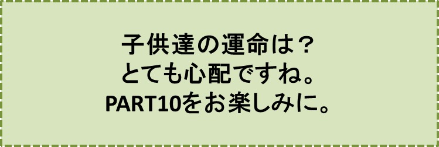

リンゴの木の神様とその弟子達-PART9-
『ホテル再訪問』の巻
笠原正雄
お昼過ぎ丁度1時に巨人岩に集ったメンバーは、三郎、章介、明、オサム、雄二の五人でした。
章介が真っ先に巨人岩の上に登り
「おーい、イサム！ 元気か！？」
と叫びます。
明がそして三郎がかわるがわる大空に向って叫びます。
このとき、大胆にもホテルの玄関にこっそり近づいて中の様子を伺っていた章介が、皆の方を振り返って
“早く来い！”“早く来い！”
というように手をグルグル大きく回し始めました。
安全だよ！ という合図に違いありません。
三郎達がこわごわ腰をかがめながら、ホテルの玄関に近づいていきます。
章介はにっこり笑って皆を迎えます。自信たっぷりな様子で、話しかけます。
「フロントの男は玄関には居ない。ボクはさっきからここで、しっかり見張っていたんだ」
この言葉に三郎達は首をかしげます。
“ホテルの中に居るのかな。それとも外かな”
“外とすれば、きっと林の中だろうな”
“林の中からボク達を見ていて、いつ襲いかかろうかと考えているのかな……”
“ホテルの中とすれば、フロントの大きな机の下か椅子の影に隠れて、ボク達が入ってくるのを待ち構えているのかな”
子供達はどうしたらよいだろうかと、額を集め心を一つにして考えました。お互いの目をしっかり見つめ合って。
“イサムも赤ズキンのおばあさんも、部屋に戻って来ているかも知れない”
“戻っていなくても、部屋に行けば何か手掛かりになるものが見付かるかもね”
子供達の胸に大きな期待が、ひろがります。ワクワク感で一杯になります。
章介を先頭に、三郎を一番後ろにして、子供達は、玄関のホールを無事に通過することができました。
ホテルの中は思ったよりもずっと暗かったために、彼らは、手に手を取り、足音を立てないよう細心の注意を払いながら、中央の大きな階段を上ります。
二階も三階も“しーん”と静まり返って物音一つしません。
ホテルの中の薄暗く、あたりを支配している不気味な雰囲気に圧倒されて、子供達はとても緊張した面持ちです。誰一人口をききません。
張りつめた緊張感の中で、三郎達はついにイサムの部屋にたどりつきました。彼等は、お互いの顔を見合わせ、心の底からにっこり笑います。
子供達はドアをノックして耳を澄まします。
「鍵かかっていない！」
多分明だったでしょう。そう大きく叫ぶと同時に彼の手がドアを押し開けました。
眩（まぶ）しいばかりに明るい大きな部屋が目の前に広がります。壁一杯かと思われる大きな窓からは、モミやスギノキの木立が広―い原っぱの向うに見えます。
イサムがつい一週間前まで滞在していた部屋に、子供達は再びやって来ました。
日の光を浴びると小鳥達が一層賑やかに囀(さえず)るように、章介達は、大きな窓から差し込む日の光を浴びて、勇気百倍、ベッドとソファしか置いていないガランとした部屋を、まるで広い野原で遊んでいるように、飛び回ります。
子供達を一層勇気づけたことに、あの『リンゴの木の神様』の絵が今も子供達を迎えてくれます。
窓から差し込む日の光が真っすぐ絵に当り、神様が持っていらっしゃる籠の中のリンゴ達、赤リンゴ青リンゴ黄リンゴ達が、それぞれの色に誇らしげに光り輝いて子供達を見詰めています。
さぁ、子供達皆が、色々の場所を探し始めます。イサムの今住んでいる場所が必ず分かる筈だと、ベッドの下、ソファの下、カーテンの影、至る所を探します。楽しい宝探しのように。
ちょっとしたメモを記した紙切れを発見しても
“見つけた！” “見つけた！”
と大騒ぎをし、それを巡って取っ組み合いが始まります。恐いホテルの中に居ることもすっかり忘れて。
野原で遊ぶようにして、飛び跳ねる子供達の笑い声はドアをすり抜け廊下にまで溢れ出ます。
全く子供達の笑い声ほど愉快なものはないでしょう。本当に聞いているだけで、つい釣り込まれ笑ってしまいますよね。
いや、子供達の笑い声につり込まれるのは人だけではありません。
部屋の中のベッドやソファも笑います。ドアをすり抜けた子供達の笑い声に誘われるように、うす暗い廊下が、共鳴します。そして通路の壁もホールの壁も階段も身を震わせて笑います。ホテル全体、笑います。
このホテルの中で唯一人、子供達の笑いのシンフォニーに応えることを忘れてしまった男つまり、あのフロントの男に笑い声が運悪くぶつかる迄この愉快な笑いのシンフォニーは、何者にも邪魔されることなく続いたことでしょう。
皆さんはホテル全体が大音楽会会場になっているという類（たぐい）まれな場所での斯くもすばらしい音楽を、斯くも沢山の聴衆が歓呼と拍手と陶酔の中で聴き入っている中で、“音楽を聴こうともしない者”によって、この音楽がぶちこわされることを望むでしょうか？
しかし、あぁしかし、このホテルの中で唯一の存在、“音楽を聴こうとしない者”が、怒りに震えて椅子からゆっくり腰を上げました。
子供達の笑い声は、彼らが化けものコウモリと恐れているフロントの男にぶつかってしまったのです！
顔から血の気が失せ怒りで醜くゆがみ、その胸は押えようのない怒りで激しく波打ちました。
フロントの男は、大急ぎで階段を駆け上がり笑い声のする部屋に向います。
男の荒々しい足音に子供達がやっと気が付いた時には、彼は、既に部屋のそばまで来ていました。
グリムの童話『オオカミと七匹の子ヤギ』では怖いオオカミに見付からないようにと、咄嗟（とっさ）に子ヤギ達はタンスや戸棚そして柱時計の中に隠れましたよね。
章介達も子ヤギ達と同じように、ソファの下ベッドの下にもぐり込んで息をひそめます。
“どうか何事もなく通り過ぎて行って欲しい……”
子供達の誰もが心の底から祈ります。
ホテルの中は、無気味に静まり返り、足音だけがカミナリのように耳に響いてきます。
……そして、子供達の必死の願いも空しく足音は部屋の前でピタリと止まりました。
♪♪♪♪コーヒーブレイク♪♪♪♪
